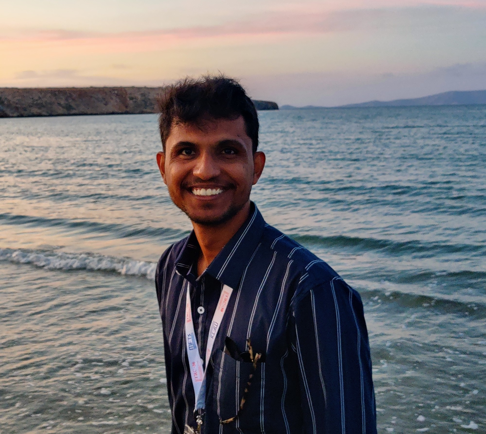
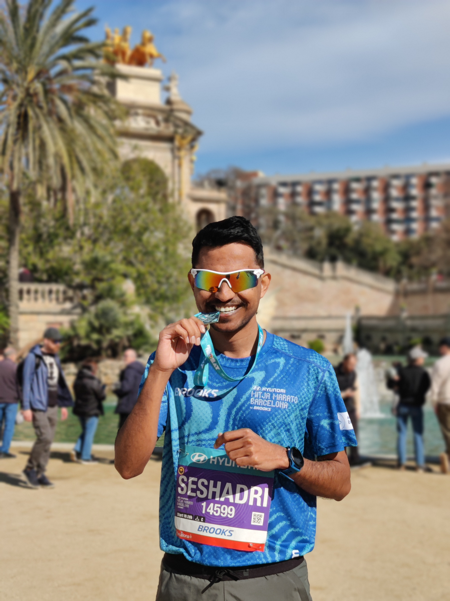
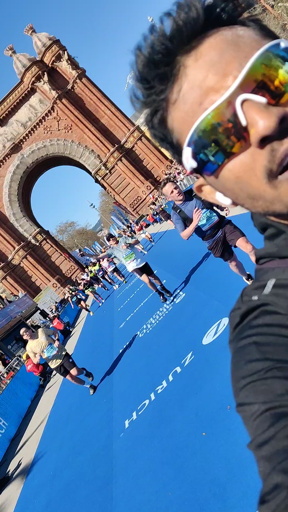
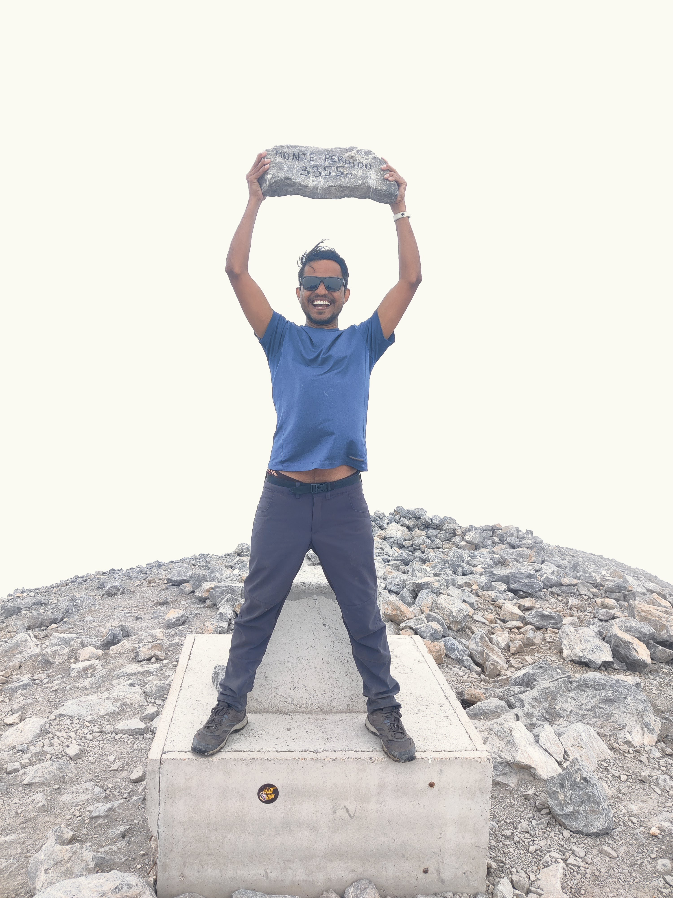

I work on modelling, management, and safety of connected and automated vehicles in mixed traffic, and on the network effects of urban road-space reallocation. Based in Barcelona.
PhD in Civil Engineering, Universitat Politècnica de Catalunya – BarcelonaTech (BIT), defended 29 July 2026. Thesis: Platooning of Connected Autonomous Vehicles on Freeways: Microscopic Modelling and Management Strategies, supervised by Prof. Francesc Soriguera.
Research stay at KU Leuven Institute for Mobility with Prof. Claudio Roncoli (Sep 2025–Jan 2026). PTV Young Researcher Award, CIT 2023. JOAN ORÓ FI AGAUR doctoral grant. Open to postdoctoral research in traffic operations, mixed CAV–human traffic, and urban mobility.
CAVs · Traffic flow · Microscopic modelling · Transport operations · Simulation
Live browser simulator of PACC / CACC / RV platoon dynamics: string stability, gaps, and emergency braking (thesis Ch. II).
Microscopic platoon modelling, mixed versus dedicated lanes, and energy. One journal article in Transportmetrica B.
Network VKT after the first permanent mid-grid cut, and residential accessibility to other residents. Both manuscripts in preparation.

Half: 1h 40m

Full: 3h 52m
Long runs bring clarity—ideas simplify and structure emerges.
Read my running journal →
Exploring trails, seeking elevation, and finding perspective in nature. Monte Perdido, 3,355 m.